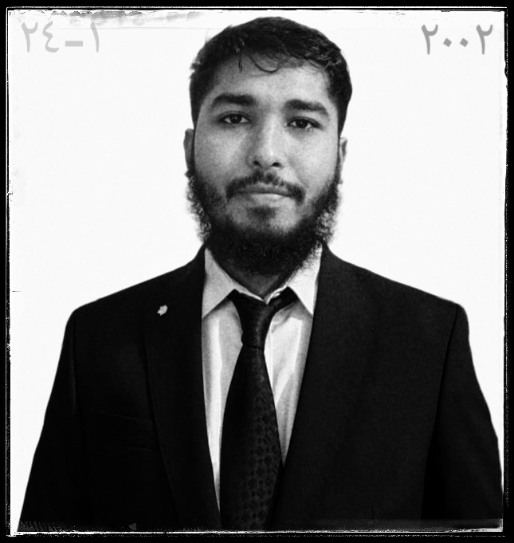

2023 – expected 2027
B.Sc. in Agriculture (Honours)
Dept. of Crop Science and Technology, Faculty of Agriculture
University of Rajshahi
3.5+Current CGPA / 4.00
Agriculture scholar and researcher
I study how crops, pollinators and input costs shape farm outcomes, and how Bangladeshi farmers adapt to a changing climate.

I am a B.Sc. Agriculture (Honours) student at the University of Rajshahi, Department of Crop Science and Technology. My work connects laboratory findings with what actually happens in farmers' fields.
My research interests are Integrated Pest Management, input economics and plant pollination ecology. I work with local farmers to evaluate adaptation methods and turn scientific techniques into practice that suits the region.
True innovation in agriculture happens where the soil meets the science.
Dept. of Crop Science and Technology, Faculty of Agriculture
University of Rajshahi
Darsana Govt. College, Jessore Board
Victoria Jubilee Govt. High School, Chuadanga
Assisted with field research layouts, observed pollination ecology vectors and collected crop yield parameters. Ran quantitative field surveys with local farmers to evaluate adaptation methods and input-output economics.


Department of Crop Science and Technology
University of Rajshahi, Rajshahi 6205
Department of Crop Science and Technology
University of Rajshahi, Rajshahi 6205